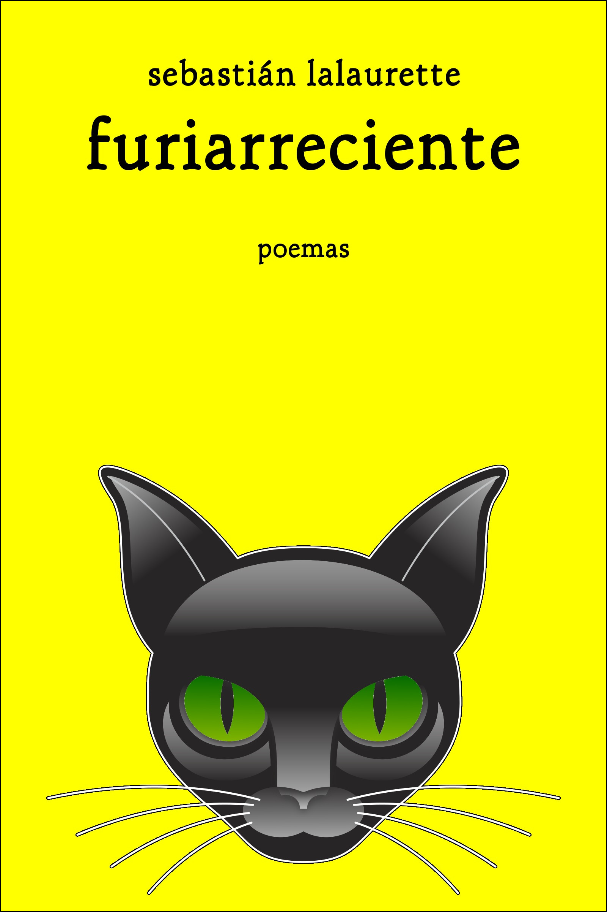

Sangría francesa
» furiarreciente
Se viene...

© 2003-2017 Sebastián Lalaurette, escritor, periodista, editor, aspirante a cyborg. Pelado como Bruce Willis y chueco como Adrián Suar. El futuro es mío.